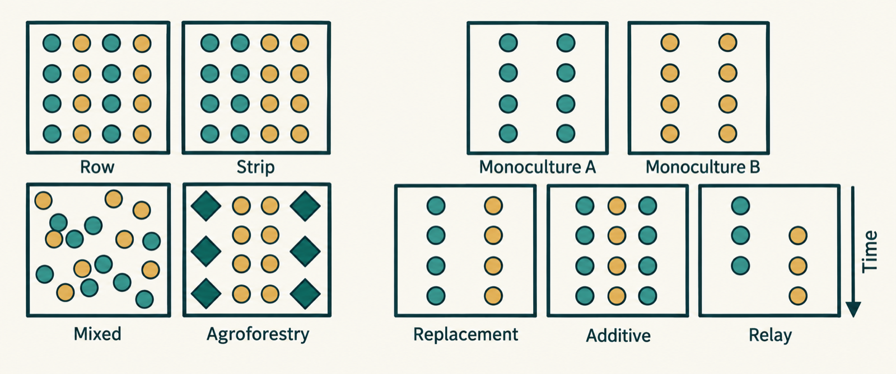

Recommended dataset citation
Datta, A. (2026). Temporally staggered cropping co-benefits beneficial insects and pest control globally [Data set]. Zenodo. https://doi.org/10.5281/zenodo.20680177
OPEN GLOBAL RESEARCH DATASET
Explore 7,617 observations from 337 peer-reviewed research articles on how intercropping affects agricultural pests, beneficial insects and insect abundance. Search the open dataset by crop combination, insect family, country, climate region, intercropping design or spatial pattern, then download the matching original records.
Filter the map, select a circle, then view or download its records. Circle size shows the number of observations in each article.
GROUPED EXPLORATION
Choose a category, then select a group to view its data points or download its original rows.

HOW TO CITE
If this evidence atlas or its data support your research, report, teaching or software, please cite the archived dataset. When referring specifically to the interactive website, cite the atlas as well and include the date you accessed it.
Datta, A. (2026). Temporally staggered cropping co-benefits beneficial insects and pest control globally [Data set]. Zenodo. https://doi.org/10.5281/zenodo.20680177
Datta, A. (2026). Intercropping Evidence Atlas [Interactive website]. Indian Institute of Technology Gandhinagar. https://adrijaeco.github.io/Intercropping/ (accessed 26 September 2026).
@dataset{datta_2026_intercropping,
author = {Datta, Adrija},
title = {Temporally staggered cropping co-benefits beneficial insects and pest control globally},
year = {2026},
publisher = {Zenodo},
doi = {10.5281/zenodo.20680177},
url = {https://doi.org/10.5281/zenodo.20680177}
}Minimum attribution: identify Adrija Datta as the dataset creator, include the dataset title and DOI, and retain the CC BY 4.0 attribution. Citations help others find the exact archived version used.
CONTRIBUTE
Fill in the study and observation details. Your email application will open with the completed submission for Adrija Datta to review. Approved records are added by the curator.
QUESTIONS & COMMENTS
Each circle represents one article at its first reported valid location. Its size reflects the number of observations from that article.
Check the measurement definition and units for each observation first. Studies report counts, percentages, and other measures that should not be combined directly.
Use the comment form below to prepare a message for the data curator. A submission is sent only after you press Send in your email application.
ABOUT THE DATA
One article can contribute many observations. The original workbook contains 337 distinct article IDs, numbered within a wider 339-article collection; IDs 247 and 250 are absent from this supplied file. Blank spreadsheet rows are excluded from the explorer and downloads.
Raw abundance values use different definitions, including counts, percentages and sampling based measures. The dashboard preserves all 37 original columns and does not pool incompatible units. Each circle uses an article’s first reported valid coordinate. Thirty-one articles contain multiple reported locations; five have none and remain available in downloads. Circle area scales with the number of observations in that article.
Source: supplied intercropping_data_version2 (1).xlsx. Licensed CC BY 4.0. Zenodo dataset and usage statistics ↗